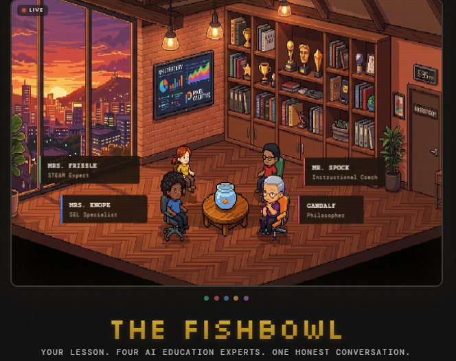

PLC Fishbowl: Closing the Teacher Reflection Gap
Can AI help tighten the reflective loop when time and vulnerability keep us from observing one another?
🐟 Interactive Tool: PLC Fishbowl
Teachers get better through reflection. None of us can devote the time to watch our colleagues often enough, and few of us are brave enough to ask co-workers to watch us often enough to really tighten that loop. Can AI help close that gap?
Launch PLC Fishbowl ↗The Observation Dilemma
Teachers get better through reflection. None of us can devote the time to watch our colleagues often enough and few of us are brave enough to ask co-workers to watch us often enough to really tighten that loop. Can AI help close that gap?

[Draft section: Expand on the structural barriers in schools—packed schedules, lack of common planning time, the high emotional barrier of being observed, and how feedback is often delayed until evaluation cycles.]
How PLC Fishbowl Works
[Draft section: Discuss the architecture and core design of PLC Fishbowl. How does it simulate or scaffold peer observation? What does the reflection workflow look like?]
Pedagogical Reflection
[Draft insight: What makes AI observation effective without turning into an algorithmic evaluator? How do we keep the focus on teacher agency and professional growth?]
Early Takeaways & Open Questions
[Draft section: Share what you've noticed so far using or testing the tool, feedback from fellow educators, and where this experiment is heading next.]